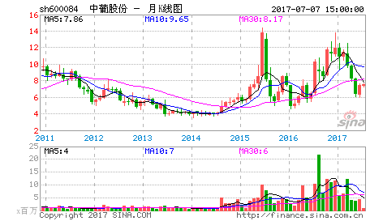
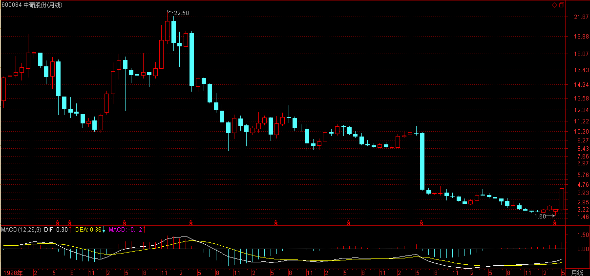
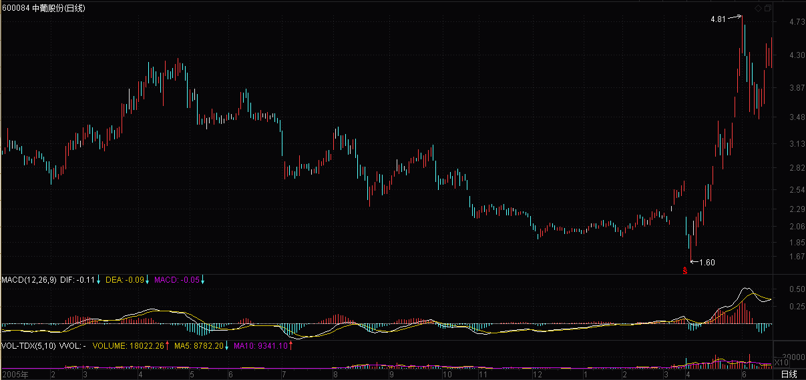
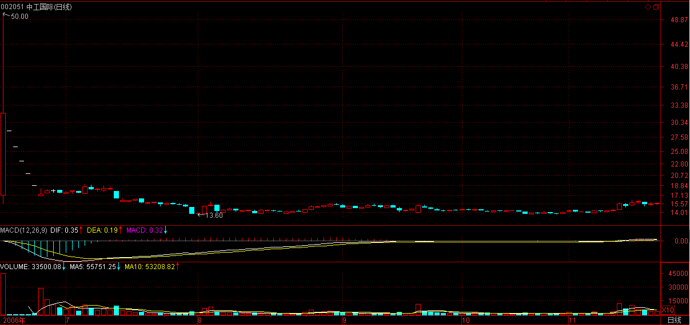
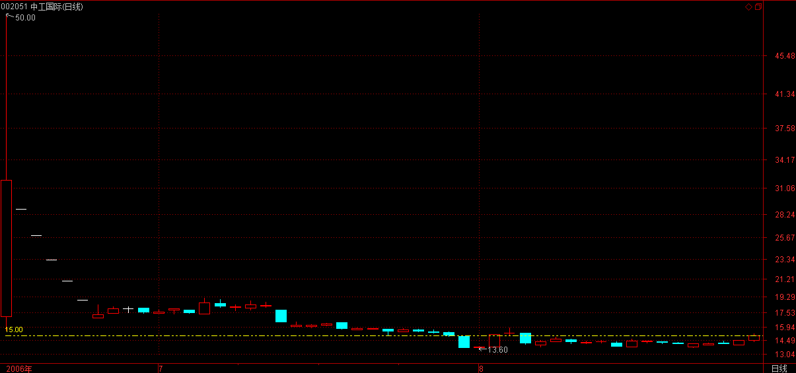
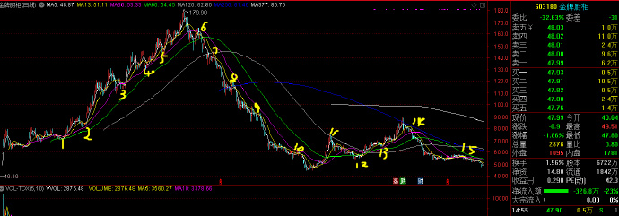
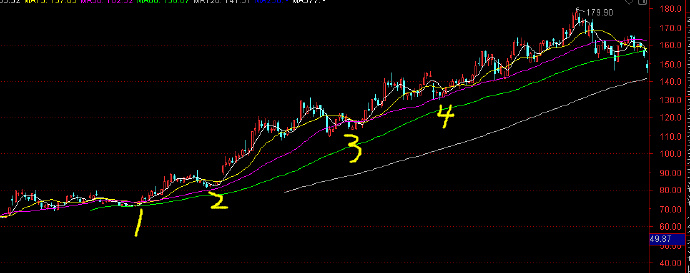
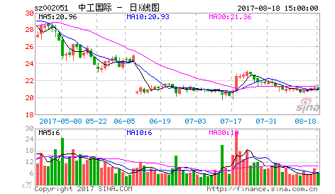
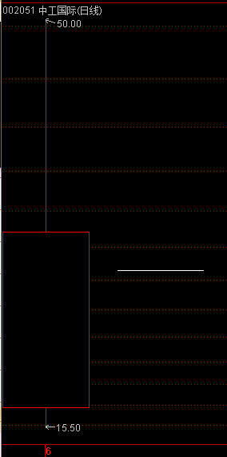
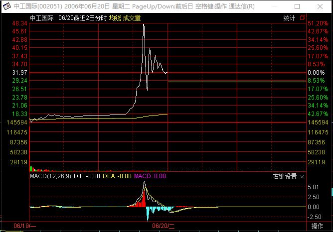

(2006-06-19 21:41:14)

教你炒股票4：什么是理性？今早买N中工就是理性！
【韶山映山红】原文配图是600084新天国际的月K线图，2009-06-24变更为中葡股份。新浪博客自动更新为当下的新图，这里贴上当时的月Ｋ线图。】

【韶山映山红】600084新天国际，2009-06-24变更为中葡股份。前一年和当年的日K线图，已经放量突破年线创新高，成为3倍股。】

很奇怪，在资本市场中经常有人在教导别人要理性。【韶山映山红】理性需要相对感性来理解，感性是对事物最直接的感受，是比较普通的、直观的、表面上的感觉，属于应激反应。而理性则是在感性的基础上进行综合处理并做出判断的思考机制。感性和理性做判断和决策的方式有很大的区别，它们相辅相成，也相爱相杀。】
而所有理性模式后面，都毫无例外地对应着一套价值系统为依据，企图通过这所谓的依据而战胜市场，就是所有这些依据最大的心理依据，而这，就是所有资本谎言和神话的基础。【韶山映山红】技术分析的三大公理（底层逻辑）：市场价格行为包容消化一切。历史会重演。价格是以趋势的方式演变。】
【韶山映山红】“对应着一套价值系统为依据”的“理性模式”都不是真正的理性。不管这套“价值系统”多么的伟大光荣正确，它都是市场之外的东西，是先验的，所以“是所有资本谎言和神话的基础”。】
【韶山映山红】静姐04-01】
【韶山映山红】扫地僧：最大的问题是这种线性的思维模式，市场是动态的，鲜活的，不存在一种所谓的恒定不变的模式来诠释市场，市场中唯一不变的就是“变”。而大多数人的思维模式还停留在因为什么，所以什么这种单细胞级的线性思维模式，而用基于这种线性思维模式的系统为依据，只不过是心理上的依据而已，并非市场本身的理性依据】
真正的理性就是要去看破各色各样的理性谎言，理性从来都是人YY出来的皇帝新衣，这在哲学层面已不是什么新鲜的事情。【韶山映山红】什么是能“看破各色各样的理性谎言”的“真正的理性”？很显然，符合客观事实及其规律才是“真正的理性”，不符合的就是“YY出来的皇帝新衣”。所以做到理性的根本方法就是实事求是。】
【韶山映山红】若禅精舍（陈秋明）：
理性主义与经验主义，是哲学史上两大重要分支。理性主义认为人类的知识来自于人自身的理性推论；经验主义认为人类的知识来自与人在实践中产生的经验。但后来康德认为：人可以感知周围的环境，但永远无法完全感知和理解自身。换句话说，事物本身，与人所感知到的，不可能完全一致，即人永远无法感知一件事物的真实面貌。
也就是说，人在根据发生事物的条件，在自认为作出理性的分析与判断的同时，由于人无法完全感知该发生事物的真实面貌，所以永远无法作出理性的分析与判断。这与索罗斯的反身性理论本质上是一回事，索罗斯对哲学和投资的认知，来源于其导师波普尔，而波普尔最著名的观点就是：完备知识的不可企及。
在此哲学基础上，完全理性人假设是不存在的假象，从而，那只看不见的手能让市场自我配置最优也是不存在的，因为人的参与决策，会进而导致客观事实的变化，使事情发展的结果与根据理性逻辑实施的理由互相影响，更何况，每个人都有认知缺陷。
这一段哲学讨论可能比较晦涩，但绝对是整部理论的最高心法，后面的所谓零向量说法，都从此处来。】
【韶山映山红】扫地僧：理性是哲学中最深奥、最难解的一个概念，几乎人人都在谈论理性，可谁也不能透彻说出理性到底是什么，以至理性成为一个比上帝还要神秘的东西。在所有探究理性的思想家中，康德应该是最深刻、最全面的一个，但他也未使人明白理性到底是什么。引用网上的一段关于理性的解释：
人脑具有一种追求和谐感觉的天性，或者说人脑对于凡能达到和谐的关系或结构的东西有一种天性的偏爱，而对于违背和谐的冲突，则有一种天性的排斥，凡达到和谐的东西，人脑就天性地喜欢它、接受它、肯定它，反映在人的意识上，人们便会认为它是正确的、公正的、合乎道德的；而对于不和谐的、矛盾的、有冲突的东西，人脑就天性地厌恶它、排斥它、拒绝它、否定它，反映在人的意识上，就认为它是不正确的、不公正的、不道德的，此时人们就会努力去消除矛盾和冲突以求得和谐。
人脑的这一天性也体现在这一视觉实验中：当人戴上一种能使物体看起来都倒立的眼镜，起初看物体都是倒的，但戴一段时间后看到的物体又都正立了，此时若摘下眼镜，看到的物体反而倒立了，而再过一段时间后看到的物体又自动正立了。这一奇特的实验结果只有认为“人脑具有一种自发地追求和谐的天性”才能得到令人满意的解释，它告诉我们，人脑不仅天生地接受和谐、排斥冲突，在遇到冲突时人脑甚至能自发地通过改变感觉的形态以重新求得感觉的和谐。人脑的这一追求和谐的天性，就是人类理性的来源。
体现这一天性的有这样一种重要的、严整、典型的和谐方式，我们可以将其概括为两条天赋的理性原则：凡在人们看来相同的事物，人们同时认为
（1）它们具有相同的性质（同物同性）；
（2）它们应该受到相同的对待（同物同待）。
“同物同性”是指导人类作出认识判断的原则，“同物同待”是指导人们作出公正判断的原则。凡符合这两条原则者，便是和谐的、也是符合理性的；凡违背这两条原则者，便是违背和谐、违背理性的冲突，也是人类天性所不可接受的，在追求和谐的天性作用下，人类就会力求消除冲突以求得和谐。人类具有的这种追求和谐的能力，便是人的理性能力。象笛卡儿、莱布尼茨等人认为人类具有某些天赋的观念，其实更准确地说，不是有天赋的观念，而是有一种能获得理性观念的天赋的机制或者说能力，只要是和谐的东西，人类会自发地对它作出肯定的反应，而对违背和谐的东西则自发地作出否定的反应。被众多思想家所肯定的人的天赋的理性，就来自于人脑追求和谐的天性。由此可见，在哲学层面上，理性确实是指人们自己YY的不存在的东西。】
更可笑的是，被所谓理性毒害的人们，更经常地把理性当成一种文字游戏，当文字货币化以后，这种文字游戏就以一种更无耻的方式展开了。 【韶山映山红】静姐04-02】
但真正的理性从来都是当下的，从来都是实践的，而实践，从来都是当下的理性。就像性是干出来的而不是说出来的，理性也一样。【韶山映山红】“真正的理性”是实践中的实事求是的过程。】
【韶山映山红】静姐04-03】
【韶山映山红】若禅精舍（陈秋明）批注：
当下，无所本而生其位，无所位而生其本。而所有当下的理性，都要落实到当下中来，从落实到当下的人身上得以彰显，离开了人的实践，一切都是空中阁楼。
】
站在资本市场的角度，就是所有的介入都是可介入从而被介入地介入着。【韶山映山红】条件满足就有因果，这是规律，不以人的意志为转移。所以先要有市场机会的“可介入”，然后才是我们“被介入”的遵循规律的介入操作。】
也就是所有的介入，当你介入时，市场与你就一体了，你创造着市场，从而市场也创造着你，而这种创造都是当下的，从而也是模式化的。【韶山映山红】所有参与者都是市场分力的一部分，所以“一体”，所以互相“创造”。 一旦买入，就身在其中，也就摆脱不了心理干扰。】
【韶山映山红】静姐04-04】
真正的理性关心的不是介入的具体模式如何，而是这种模式如何被当下着，最重要的是，这种模式如何死去。【韶山映山红】以走势类型分析为例，真正的理性关心的不是具体的走势类型如何，是什么样的走势类型不是重点，关注的是走势当下的形态和动力，最重要的是走势如何完成，或者如何被破坏。】
【韶山映山红】静姐04-05】
生的，总要死去，【韶山映山红】静姐04-06】如果自然真有什么法则，这就是唯一的法则，市场上的法则也一样。所谓法则，就是宿命。【韶山映山红】所谓法则，就是宿命。宿命，就是逃不掉的。】
在市场中，死亡是常态，也是必然，【韶山映山红】每一波行情都会结束，每一种走势类型都会结束。】而生存，必须以生为依据，【韶山映山红】生住坏灭，住以生为依据。】所谓生生不息，其实就是死死不息，【韶山映山红】没有旧的死，哪来新的生。线段走势不断的产生，也就是原来走势不断的死。】当你被依据所依据时，其实已在死亡之中。【韶山映山红】新的走势证明了自己的存在，其实也就意味着死的开始。第三类买卖点证明了当下的盘整走势，同时也是盘整的结束。第二个中枢证明了趋势的形成，同时也意味着趋势死亡演化的开始。】而生死，从来都是被当下所模式，资本市场也一样，以为离了生死也就无生死可了，这不过是所谓理性的妄想。【韶山映山红】别的技术分析理论。没有走势类型的演化，也就没有走势类型的生生死死。但走势是客观存在的，与主观的分析无关，不管你怎么分析，她都在那里花开花落。】
任何市场中人，都是被生死了的，生死无处可离，生死就在呼吸之间，不离生死而从容于生死，没有这种大勇猛，一切的理性都不过垂死的哀鸣。【韶山映山红】进入市场，也就被裹挟进了走势的生死。生，有无数种死法。死，又随时可能演化出生。生死无常，走势不可测。不测而测，随势应对，方可从容于生死。没有走势的完全分类，也就不存在从容于生死的大勇猛。】
【韶山映山红】静姐04-07】
对于市场来说，介入就是介入生死，无所依据地从容于各种模式之间，无所往而生其心，而心实无所生，方可于生死而从容。
【韶山映山红】这一段讲的还是缠论的核心思想“走势终完美”。以走势类型分析为例，“任何走势，无论是趋势还是盘整，在图形上最终都要完成。另一方面，一旦某种类型的走势完成以后，就会转化为其他类型的走势，”这就是“生的，总要死去，”“死亡是常态，也是必然，”“走势终完美”。“而生存，必须以生为依据，”趋势的生的依据是产生新的中枢，盘整的生的依据是不产生新的中枢。游离于生死之间，随波逐流顺势而行，自然“于生死而从容”。】
对于市场的参与者来说，首要且时刻必须清楚自己目前介入模式的当下，【韶山映山红】以走势类型分析为例，多级别联立，就能时刻清楚当前走势的前世今生。】而市场中的绝大多数人，是不知道自己在干什么的，狠一点说，就是死都不知道怎么死就死了，市场基本由这种人构成。这种构成与资金实力无关，大资金死起来更快，一夜之间土崩瓦解的事情，本ID见得多了。【韶山映山红】缠论很容易造就复盘大神，所以缠师始终强调的是当下。缠中说禅，不只是技术。资本市场是名利场，也是最好的修行的地方。】
此外，如果你一定要很习惯地、理性地追问什么是理性，那么，相对那些光说不干的所谓理性，今早15元多买N中工就是理性！【韶山映山红】首先，002051中工国际2006年6月19日上市，之前上市的002050三花智控2005年6月7日上市，间隔整一年，作为停顿一年之后的第一只股票，当然备受关注，这是市场因素。中工国际是全流通改革后发行的第一只股票，和改革挂钩，成败事关重大，这是政治因素。开盘位置都说高，其实并不算高，后来的市场走势给出了证明。所以抢筹就是一种理性了。上市第一天94%的换手率，映证了那个段子：买的人和卖的人擦肩而过，互相鄙视地骂一句傻逼。】
理性是干出来的，今天，你干了吗？【韶山映山红】如果现实是不合理的，那么，不合理是拿来利用的，不是拿来嚷嚷的。】
（待续）
【韶山映山红】南无月光如来注：
看了下写本文时当时和以后的评价，许多人连N中工是个什么股都不知道，就对缠师一顿臭骂。可想而知，这种人是否能理智的做股票了。
（缺图）
上面为中工国际上市当天的分时图，由图知，在很长一段时间，该股当天都是在均线上方横盘。这是一种强势表现，如果A股市场是T+0的话，上午横盘就是介入的好时机。
缠师所说的在15元多买入该股，其实我们看其后的走势，即使5个跌停板之后第六个打开也还是赚钱的。
更主要的是：缠师以这个股来说明：你介入的当下，是如何计划的，仓位是多少，买入后又是如何根据股票的走势当下地决定股票的去留，这才是关键的问题，这才是理性。
（缺图）
缠师后来的回复：
（缺图）
http://blog.sina.com.cn/s/blog_60c36c130100hyga.html 】
【韶山映山红】为什么“今早15元多买N中工就是理性”？中工国际后面连续6个一字跌停板，是否证明缠师错了？关于缠师对中工国际的这几篇文章，网上有很多议论。我们不拿缠师当做大神，要理性思考，就要了解背后的逻辑。缠师在后面文章的一个问答里回应了这个问题，提前粘贴如下。】
[匿名] nn
非常欣赏楼主的新思维和大智慧,但有一点不明白,楼主为何说15元多买N中工就是理性?现在我不是想问N中工值不值这个价,我是想知道假如我在那个位置买了,后面的情况大家也知道了,我的问题是在这个长达几个月的过程中应该如何处理才是最佳的操作手法?

==================
开盘就买中工当然是理性的，因为第一只，而且开盘的位置也不太高。后面之所以出现如此走势，是中国特色的管理层所造成的，但开盘15元多买的，后面18、19元随便你出，由于情况发生了意外，当然就要选择退出，这还是上面的原则，买股票一定不能追高，这样一旦发生意外，退出也简单。

2006-11-22 12:25
sos
总结
1，当下很多炒股的人片面地孤立地理解理性，也就不理性了。
2，参与市场后，参与者就是市场的一部分，就要考虑自己与市场的互动，不要只看大资金其他和市场的互动
3，参与者应该明白，市场没有固定不变的法则，即使有规律也不是实实可以把握的（因为市场是个开放系统，信息变化的速度难以想象）因此不要迷信法则
4，明确自己的情况，明确市场的情况，明确自己的目标，明确自己做什么
其实搂主可以写的通俗一点。毕竟这个话题受众很大，这点我比较欣赏革命时期的苏区农民文学家赵树理。
不管如何还是一片好文。
2006-6-19 22:31
开心
是啊，生死置之度外，才是炒股的基本要素。在一个随处变幻理性的市场，如何捕抓新生是何等重要，这得学学，楼主高啊，有理性。
2006-6-20 00:36
LONG
世界已经到了弱肉强食的时候了,要想立足,就要变强
2006-6-20 09:13
你的样子
现在看，老大的眼光就是准，事实胜于雄辩。
这里出现了老大的经常被引用的名言：
“今天，你干了吗？”
2007-2-4 13:58
西海
每一篇都要学习
发现一个现象:06年回帖的骂得多,07年回帖的赞得多
经过时间的检验,好东西就是好东西,呵呵,继续学习
2007-9-1 16:07
(2019-08-09 19:57:39)
上周有一个粉丝问我金牌橱柜该怎么操作
他在164元买进的，一直持有到今天，我就问他，为什么当初164元买进
他说，当初买进是“以为”还要涨，所以买进
巅峰价格是179元，赚了钱没有卖，“以为还要涨”
回来下跌了很多，是因为“以为”回调后就继续反弹，赚钱都没有卖，想反弹到179元再卖。
一直持有，是因为自己“以为”不会下跌这么多。
股民的操作是靠“以为”来指导操作的！

我们来看日线图，你难道没有发现均线的趋势浩浩荡荡吗
1点回踩60均线，构成买点买进，设置该均线为止损点
2是回踩30均线，构成买点加仓，设置该均线为止损点，
然后你会看到日K是依托30均线按照一定的角度上升，
每次靠近回落该均线都是低吸的位置，在1点和2点买进的，就一直要按照30均线持股。不能卖出一股。这就叫“约束自己”
6点跌破30均线后反抽不过，这里是卖点，就清仓了
7点的上面是反抽60均线，下方是反抽半年线，这是最后的逃命机会。
当行情走到7点的时候，很明显该趋势浩浩荡荡，是依托紫色30均线均线下跌的，所以日K只要是反抽该均线不过就是卖点，该均线之下就要一直休息。
8点，9点，10点，都是反抽均线不过。所以都要看空做空。
11点是大反弹受到半年线压制，所以也是卖点。
12点回踩60均线，13点回踩30均线不破，都是新反弹的买点
14点是受到年线压制后下跌，站不稳30均线就该清仓
后面的趋势是单边依托13均线下跌，或围绕30均线下跌
15点的横盘反抽靠近60均线压制，后面发生了破位杀跌这种均线之间的支撑，压制，都是当下分析的，并不是事后分析。

均线系统预测的基础是假设走势会继续向现在的趋势继续
比如我们在1点买进，在这里就设置一个止损点，后市不跌破止损就持有。
结果市场不打我们的止损，就是持有了。1点买进的逻辑就是我们假设市场还会向上发展。这个假设成立，那么现在就是上升趋势的中的回调，所以在1点买进。
后面的买点逻辑，以此类推。当行情走到2点，我们可以看到行情依然是升势，这不是骗自己，而是均线告诉我们的趋势，这个回调30均线的低位，也就是当下的2点，我们买进就带一个止损，我们假设这里买进后，市场还会向原来的上升趋势继续发展。后面果然又是上升。按照均线操作，就是这样顺势操作得来的。或者说是靠这些关键点赌来的。
操作成功的基础，或者说赌博成功的基础，就是因为趋势一旦成立，就不会马上改变。还可以理解为物理学的惯性，这个升势是有一种内在的力量在源头不断的推动着，这种升势还有一定的惯性，所以在回调处买进可能获利。
在利用均线系统操作和预测的过程中，你发现没有，我们并没有去在意每一根具体的日K线的意义，在上图整个趋势中，有N根K线，有阴线，有阳线，有十字星，有长上影线。其实我们关注的是均线的移动方向，就是指整体的运行趋势，这个才是最重要的。站在这个角度来看，其实没有必要去分析没个明天日K线的意义。我们做的不是一根K线，而是赌一个趋势的继续。
今天你看了我的这篇图解，如果你能把每一个K线图，都能当下的利用均线的压制和支撑关系去理解它，并能指出现在是什么趋势，哪些位置是买卖点，什么情况下应该有约束的持股，什么时候该有约束的空仓。你就成为了均线操作的高手。你再也不会靠“以为”来操作了。
明白了这篇文章，给你一个K线图，只要几分钟就能看明白该趋势了。什么时候是买点，卖点，什么情况可以买，怎么设置止损，怎么持股，何时空仓休息，答案就全部有了。什么叫顺势而为，按照均线操作就是顺势而为。你可以追炒消息股，可以追逐龙头股，你可以分析基本面，但你不能违背均线系统，当你的“以为”感觉和走势产生矛盾时，你应该选择遵守均线系统。走势说明了一切。即使升势出现卖点离场后再次大涨，你还可以在下一个买点进场。
均线系统出现买点，并不代表一定要大涨。相反，均线系统出现卖点也不一定大跌，这些买卖点的出现，只告诉你是趋势上的一个“最佳赌博点”这个都不明白，就白学了。学了这么多，请自己去分析大盘和你持有的个股吧。
盈利需要正确的方法，需要一套正确的策略。多多理解，你就会在均线操作中如鱼得水。
【网文】一位老股民谈炒股的最高境界
(2019-08-08 20:45:02)
股市是一个喧嚣嘈杂的地方，很多在生活中比较明白的人一进股市便耳目失聪；股市又是一个充满诱惑的地方，很多在工作中较为理性的人一进股市便方寸大乱；股市更是一个不确定性很大的地方，这个世界的变数和搏弈太多太多。因此，投资股票需要独立思考，沉着镇定；需要化繁为简，弃小就大，抓住主要矛盾；需要耐心持有，“以不变应万变”，达到“不战而胜”的至高境界。
人性是有弱点的，我也走过很长一段弯路，属于比较愚笨之人。总结自己的投资过程，1999年到2002年期间特别重要。为了清算1999年前因盲目投机几乎导致破产的错误，连续三年读了几百本书，上千份财务报表，重点调查了十几家上市公司，在对投资的思考上可谓绞尽脑汁，几经痛苦，然而几番实践后“柳暗花明”，发现投资的道理其实非常简单。
概括起来，就是四条经验，即：投资要大气，选股要严格，买股要随时，持股要耐心。
投资要大气
股票投资应大气。在市场价格潮起潮落、涨跌不定的氛围之中，在牛市、熊市更迭交替、利多利空层出不穷的环境之下，应该高屋建瓴，抓住核心问题，以此为指导，就容易解决赚钱的一切问题。核心问题是，从长期而言，社会是不断进步的，经济是不断发展的，股市是永远向上的。不管经历多少风风雨雨，都改变不了股市长期向上的本质。美国道琼斯工业指数上个世纪初是100点，现在已经超过了13000点；上证指数1990年是100点，现在已经跃过了5000点。作为一个投资者，只需要严格的选股，简单的买入并持有就行了。
具体而言，投资要大气包括以下几点：
一是思想上不要计较小的利益。
比如一截波段，一点差价，甚至买入卖出时讲究挂低挂高几分钱等等。关注蝇头小利而成天炒来炒去的人难以成就大事业。有些股民尽管也知道某个股票有极为良好的成长性和发展前景，十年能涨十倍，但却在买入后老是盯着起起落落，计较几块钱的差价，倒来倒去，结果，捡了芝麻丢了西瓜，再也买不回来了，因小而失大。比如贵州茅台、中国石油、招商银行，很多股友都跟着我在极为低廉的价格买到过，但一直持有到现在的人却极少。
事实上，世界顶尖的投资大师没有一个是炒短线的。认真思考一下就会知道，既然股市总体趋势永远向上，投资者就应有远大的目标，牢牢抱住优秀公司的股票不为所动，立志赚足利润，依靠时间最终成为亿万富翁。
二是操作中不要讲究小的技巧。
比如高抛低吸、止损、底部顶部、金字塔结构、时间之窗、黄金分割位、包括所谓的牛市策略、熊市策略等等都不外乎是技巧方面的东西，而不是智慧方面的东西。在技术分析中有100多种令人眼花缭乱的技术指标，里面充满着各类看似精妙的技巧，就象赌场里的《21点必胜法一样》，其实都是一些雕虫小技，以此操作成功的能有几人？其中波浪理论最为典型，大浪里面有小浪，小浪下面有细浪，走向永远有无数种可能，你怎么操作？我后来投资股票，自定“五不主义”（曾经讲过三不主义）：不依大盘，不听消息，不作预测，不重技巧，不信技术。技术分析最致命的问题是脱离公司的基本面，空对空地以价格变化去解释一切，也就是本质和现象相脱离，或者是离开本质谈现象。投资者应该摈弃一切技巧。这并不是说过头话，而是重要的理念问题。古代项羽说过：“学剑，一人敌；学书，万人敌！”将军可以不是神枪手，但能指挥千军万马。真正的盖世高手是不要任何武器，空手就能致胜。买入并且长期持有虽然简单，却是智慧层面的东西。智慧高于技巧。人的一生当中其实只要长期拥有极为优秀的几只好股票，就享用不尽了，就象香港持有万科18年而成为巨富的刘元生那样。
三是心态稳。
不去理会大盘的波动涨跌，也不要害怕类似“9.11”、金融危机以及最近的美国次级债券危机等等这类突发性事件。心态不稳是长期投资的大敌。健全稳定的神经系统是投资制胜的一个重要条件。同时也不要去预测短期的走势而自寻烦恼，那其实是为股市算命。股民一预测，上帝就发笑。我一直主张不要看盘，不要去看价格的红绿跳跃，只要关心上市公司的基本面就行了。1999年前我做了5年技术分析，下的功夫远超过当年读大学，最后得出的结论就是短期走势无法预测，也不用去作短期预测。要说底部顶部，改革开放前就是中国经济最大的“底部”，而“顶部”这辈子是看不到的。我们只应关心是不是优秀的公司，着眼的是公司的未来，选择的是长期持有，注重的是长期回报。
四是眼界高。气魄大，眼界就高，就不会老盯着平庸的和失败的公司,也就是不会去买垃圾股,就会下决心只拥有最优秀公司的股票,就会努力提高自身的素质和本领,磨练出一双鹰一般锐利的眼睛,去辨别各种各样的公司。我们要挑选的应该是极优秀的公司，不只是在行业中最佳，而且要在国内市场中最佳，最好还要将它们放在世界的大舞台上考察比较。要把时间和精力都放在选择公司上面，要尽力使自己股票品种全是最好的，打开帐户，鲜花盛开，而不是杂草丛生。
投资要大气很重要，否则学价值投资就学不到精华。学价值投资当然比学技术分析和听小道消息好得多,但并不等于就是学巴菲特，学巴菲特是要在价值投资的基础上追求卓越，追求大气，有了大气的思维，在思想意识上才有远大目标，目光才可能长远，思想才可能崇高。做好人，买好股，把资金投到对社会有积极影响的公司中去。荣毅仁先生的家训中有一句话很值得我们效仿：“发上等愿，结中等缘，享下等福”，首先强调的也是立志要远大。这是指导思想和投资理念中很重要的东西。
选股要严格
严格挑选股票是股票投资中的主要矛盾。投资的核心问题是如何用较低的风险取得较高的回报，要解决这一问题就必须选好股票。什么是投资哲学？这就是投资哲学。
回顾历史，在所有传统的股票投资理论中，最基本的理论就是“长期好友理论”了。这一理论有句名言：“随便买，随时买，不要卖”。它抓住了股市永远向上这一关键问题，但可惜方法不够严谨，思想不够卓越。我主张批判继承这一经典：反对“随便买”，因为“随便买”会影响长期的收益水平，流于平庸；有些赞同“随时买”，因为“随时买”适合大多数人；完全赞同“不要卖”，因为“不要卖”抓住了投资的大方向。我的格言是“严格选，随时买，不要卖”。
世界上许多投资大师的辉煌业绩证明，严格选股是极为重要的。下面着重谈“严格选”的问题。
这就不得不提一下“随机漫步理论”，这种理论莫名其妙的非常出名，它为了证明市场是有效的、投资者的选股功课是徒劳的，经常举出猴子掷飞镖的例子来说明买股票用不着花工夫去认真选择，选择的结果与猴子乱掷的结果也差不了多少。这实验虽然非常有趣，却并不科学，并不能证明“随便买”正确。因为大部分人的注意力被实验者引向了猴子，却忘了与猴子做类比的投资者是些平庸的投资者（准确地说是些华尔街的股评家）。因此，巴菲特严肃地指出，如果市场总是有效的话，我们这些人只有去喝西北风了。
要成为一个卓越的投资者，就必须严格挑选极为优秀的公司。我曾对采访我的记者反复说过，投资者要有“股不惊人誓不休”的精神。
那么，什么样的股票才是惊人的呢？主要有两层意思，一是在有生之年能拥有几只涨幅达到100倍的股票。我已经用五年时间拥有了几只涨幅十几倍的股票，相信能有那么一天，某只股票在我的珍藏下涨幅能超过100倍。我已年过50，深感觉悟太晚，所以只敢提100倍。我对女儿的要求就不一样了，是要在有生之年拥有几只涨幅超过300倍的股票。第二层意思是选择的股票必须要“万千宠爱在一身”，就是要拥有多种独一无二的竞争优势。无论从哪个方面来考察公司，无论怎么苛刻，都挑不出影响公司长期成长和收益的毛病来，它是那样地卓越和超群。
很多人一听100倍会有些吃惊，其实稍微举几个例子就能说明这并不罕见。比如沃尔玛和微软公司上市也不过20~30年，股价都已涨了500~600倍之多，我们身边的万科按1990年的原始股股价一元计算，则已涨了1400多倍。
具体应该怎么来选择这样的优秀上市公司或股票呢？是不是要多看财务报表呢？我要强调阅读财务报表只是价值投资的一个基础方面。我自己就走过一段弯路，还差点钻进牛角尖。注意研读财务报表只是表明关心基本面，这与专看K线图和听小道消息确实不一样，但这还不算是价值投资，更不等于是学巴菲特。我认为,调查和思考企业的重大问题,比如持续竞争优势问题,盈利模式问题,自主定价权问题，未来利润增长点问题,行业特点问题，管理层问题,市场价格和内在价值的差异问题等等,才是价值投资的首要步骤和关键内容。这些问题财务报表上没有，或者说不直接反映。阅读财务报表含在调查里面。要通过阅读财务报表去思考企业的重大问题。“我思故我赚”，思考的重要性就在这里。因为要选择极为优秀的公司，光阅读财务报表是远远不够的。好的投资者应该是董事长，而不是会计。
要从大处着手，首先考虑公司有没有独一无二的竞争优势。这个“独一无二”极其重要，你会一下子就把优势公司和一般公司筛选出来。我有个习惯，如果用半个小时都找不出一个“独一无二”出来，我就要放弃它了，尽管它可能看起来股价较低。如果有人问我某只股票怎么样，我先会反问：“它有什么独一无二的优势？”
说到独一无二的竞争优势，很多人会以为这就是常说的核心竞争力。其实，它包括核心竞争力，但不光是核心竞争力。严格说，核心竞争力是管理科学的概念，这个概念是两个美国管理科学家在1990年提出来的，主要是指企业的研究开发能力、生产制造能力和市场营销能力，是在产品创新的基础上，把产品推向市场的能力。它强调的是核心能力和技能。这种能力，只属于我所说的独一无二的竞争优势的一种，仅以此来作为评判企业优劣的标准是远远不够的。管理学是科学，投资则是科学与艺术的结合。在投资学上，独一无二的竞争优势含义要丰富得多。否则就无法理解什么是“傻瓜都能赚钱”的公司了。
独一无二的竞争优势有很多种，为了更加易于理解“什么是好股”，我归纳了主要的六种，可能互相之间会有点重合或者互为因果。
第一，垄断优势。按照经济学上的“垄断”的含义，是指单一的出卖人或少数几个出卖人控制着某一个行业的生产或销售。我用自己的话说，就是独家生意。或者说得长一点，是独家经营，或者重要产品、服务的最先推出和独家拥有。香港交易所和澳大利亚交易所就是独家生意，在本地区本国独此一家，别无竞争。美国辉瑞药厂的伟哥刚推出来的时候，也是独霸天下。当然，垄断除了独家生意以外，还有一种叫寡头垄断，我们在市场上经常能发现，80%的市场和利润被两至三家最大的生产组织所拥有。银行信用卡大部分必须通过万事达或维萨两家国际组织的网络,世界上的碳酸性饮料的市场基本上就被可口可乐和百事可乐所垄断。国内牛奶的市场最大的两家是蒙牛和伊利。不过，我更推崇的是独家垄断。
第二，资源优势。资源就是与人类社会发展有关的、能被利用来产生使用价值并影响劳动生产率的诸要素。很多公司都拥有各自的资源。资源的关键在于稀缺，按照稀缺的程度可以分成不同的等级。比如江西铜业拥有铜矿，但却还不具备独占的优势，因为很多铜业公司也有铜矿，不能算是最高等级。中国石油的等级就要高一些，南非的黄金钻石等级更高一些，而盐湖钾肥所拥有的钾盐矿，则占全国总量的近90%，这种资源的优势就具有独一无二的性质。又比如离开了茅台镇就生产不了茅台酒，那么茅台酒厂资源优势就具有独占性质。我最喜欢的是具有独占性质的资源优势的公司。
第三，品牌优势。有品牌的企业很多，有了品牌并不等于有了独一无二的优势。品牌优势的独一无二简单地说就是要强大，强大到行业第一。茅台号称国酒，同仁堂号称国药，耐克公司那简单的一勾，就是世界最好的体育用品公司和运动产品的标识，已深深为全世界特别是年轻一代消费者所喜爱。这种优势也是巴菲特的最爱，他叫做消费独占，我有时把它叫做消费者心理霸占，就是把消费者的魂勾去了。比如同样的产品，人家就要买这个牌子的,哪怕这个牌子贵了一大截。
第四，能力技术优势。也就是大家讲得最多的核心竞争力。能力指的是公司团队在决策、研发、生产、管理、营销等方面的技能，比如万科公司，它在品牌强大之前，主要是管理团队极为优秀，能力太强，堪称地产界第一。烟台万华的MDI制造技术独家拥有。微软的技术优势简直是世界老大，任何软件产品不适用WENDOWS系统，你就麻烦了。1997年我第一次接触到招商银行的一卡通时，就深为他们的专业能力、创新能力和服务能力所震动。一张卡片，居然可以活期定期本币外币全包含，而且比存折易带，又不暴露存款数字。这在当时可是全国领先。其后他们还不断推出金融服务创新品种，一直在同业中处于领先地位，这就是能力技术优势最直观的例证。
第五，政策优势。政策优势主要是指政府为加强相关产业的战略位置，制订有利于发展的行业政策与法规，使相关产业形成某种具有限制意义的优势。除了专利保护和减免税优惠政策外，有个原产地域保护政策也很有意思。例如香槟酒。香槟是法国一个地方，只有这个地方生产的气泡酒才能叫香槟，别的地方就不行。政策优势，就是指这种具有限制性质的优势。云南白药，片仔癀，马应龙三个公司的产品被列为国家一类中药保护品种，在很长时间内别人都不能生产，甚至也不能叫这个名字。茅台镇上也有别的酒厂，但只有茅台酒厂的酒才能叫茅台这个名字。
最后，行业优势。行业分析是投资者作出投资抉择很重要的一步，有时甚至是投资成功的先决条件。因为有些行业牛股成群,投资的赢面高;有些行业却牛股稀少,投资获胜的概率低。这是因为基本面确实如此：有些行业就是有先天优势，有些行业注定要吃亏。有些行业就是稳定增长，没有周期性，比如食品饮料业；有些行业就是门槛高，大部分企业进不来，比如航天业；有些行业就是有提价能力，不会你杀价我也杀价，比如奢侈品行业；有些行业的产品就是不怕积压，甚至越积压越值钱，比如白酒葡萄酒；有些行业就是集中度高，它们的优势就是竞争对手少，比如银行业、保险业，更不要说交易所和银行卡国际组织。有专家喜欢用行业利润永远趋向平均化的经济学理论与我辩论，意思是当一个行业拥有暴利的时候必然会引起更多的人和企业进入，从而带来行业利润最后平均化。其实这只是一般而论，很多情况并不如此，因为行业壁垒是客观存在的。
当然，拥有其中一种独一无二的竞争优势，还不能构成买入这家公司的充分条件。有了其中一种独一无二的竞争优势就有了关注的前提。接下来要考虑的是这种优势能不能形成极强的赢利能力？比如自来水、电力、燃气、桥梁、高速公路、铁路等公用事业公司，虽然具有明显的垄断优势，可是价格受管制，没有自主定价权，能赚大钱的不多。在美国上市的中国公司中，广深铁路表现不佳，11年只涨了一倍多。铁路是高度垄断行业，业务好的不能再好，它不太赚钱就是因为事关民生票价不能乱提。张小泉是著名的剪刀品牌，当没有能干的管理层去经营去继续开发的时候，它根本就赢不了利。很多公司拥有资源优势，但当国际商品资源价格处于低潮时，它也是一筹莫展。我们投资股票，最重要的一点就是看它有没有良好的收益，所有的优势最终也还得落实在收益上。
那么，极为优秀的公司平均每年的利润增长率至少应该是多少呢？我前面说过要“股不惊人誓不休”。好股票应该具有数十倍的成长潜力和前景，平均每年的利润增长率不能低于20%，当然，能超过30%就更好。茅台，招商银行，万科就超过了30%。蒙牛在前几年甚至达到了惊人的90%。
有了某种独一无二的竞争优势，又有极强的赢利能力，是不是够条件了呢？还是不够，还要看它的优势和盈利能力能不能长期保持。也就是通常所说的持续竞争优势。这一点难度更高，更有技术含量。买股票就是买未来，长寿的企业价值高。一个公司在某一年赚钱不难，难的是一辈子赚钱。BB机刚出来的时候风光无限，但没几年就不行了。柯达、乐凯等生产胶卷的公司由于数码相机的出现变得非常被动。这就需要我们的眼光更为长远，思想更为深刻。这就需要这个公司“万千宠爱在一身”,也就是多种竞争优势都具有。
可能会有人说，您说的公司近乎完美，好像很难寻觅。其实在我的持股名单中符合的就不止一个，有兴趣的读者不妨用条件套一套。要做到“股不惊人誓不休”，当然不会是一件轻而易举的事。但你发了上等愿，至少能结中等缘吧。我主要是提供一个严格的思路，在挑选股票方面要精益求精，锦上添花，没有止境。这才是追求卓越，这才是无懈可击。
谈了这么多，一直没有谈到价格，价格不太重要吗？不是的，价格当然重要，“安全空间”这个词简直是价值投资者的口头禅。好公司加上好价格才是好股票。我曾经把巴菲特的投资策略概括为十二个字：好股，好价，长期持有，适当分散。就已经把好价包括在内了。但我们谈的主要问题是优秀公司的问题。同时我认为，相对价格来说，好股是第一位的。先好股，再好价；先定性，再定量。这也是一种投资哲学。
买股要随时
买股要随时，就是主张“随时买”。必须申明，这是针对大多数人尤其是有稳定后续资金的工薪阶层而言的。
经常有人面容严峻地向我提出：“随时买，价格不用管了吗？万一买到高价的怎么办？”其实，提问题的朋友没有深思熟虑过，价格问题是个复杂的问题，在实践中甚至是可遇不可求的问题，能力圈之外的问题。你如果有幸常能在入市时遇到“9.11”或者金融危机之后这样的大机会，当然是件美事，然而股市牛熊难测，风云莫辨，不确定性是主流，必须“以不变应万变”来对付。我的经验是，努力捕捉机会也会丧失机会，放弃这样努力也许就逮住了更多机会。多想想方法，而不要动太多的脑筋去想买入时机的问题，也不要成天去盘算市赢率的高低。不同的人参加工作有先后，入市时间有早晚，一旦决定投资，难免会买到高点低点，但有了严格选和不要卖，即使是不那么幸运，最终还是会大获全胜。
有的股友引用巴菲特先生坐拥几百亿现金不出手，并表示愿意一直等下去（等到合适价格）的例子，来反驳我的“随时买”，甚至指责我有背离巴菲特的嫌疑。然而我经过再三思考，坚信这并无大错，尤其是这么多年，眼见很多朋友一再等待贵州茅台、招商银行、港交所等股票的价格跌到他们的心理价位，结果或者是永远无法买到，或者是失去耐心买得更高的事例，更能感受到学习巴菲特不能教条的重要意义。不要忘了，在美国投资界百万富翁和千万富翁组成人员状况的调查中，尽管顶尖的往往是职业投资者，但人数比例最高的恰恰是在二战以后简单买入并且长期持有的普通投资者。
大史学家司马迁在《史记———货殖列传》中说过一段精辟的话：“无财作力，少有斗智，既饶争时。”就是“没钱靠体力，钱少靠智力，钱多靠掌握时机”。坐拥几百亿现金的巴菲特已经取得了巨大成功，属于世界顶尖“钱多”的那一类。我的这个“随时买”不包括拥有大资金的投资者和专业投资机构，只是针对大多数普通投资者而言。大多数人属于“钱少”的工薪阶层，每月有固定的工资奖金收入，“随时买”就是每个月都用工资奖金的剩余部分买，这种固定的买法最终能使买到的股票成本平均化，既不会太高，也不会太低，但由于严格挑选，买到的基本上是优秀公司的股票，长期来看，收益率还是极为可观。这是靠智力的买法，只要实施，可以说人人都可以成为亿万富翁。不信的话，看看我给出的这个方法：
深圳的年轻人如果月薪在3000元左右，那么一对情侣如有毅力又有恒心，每月拿出收入的20%，即每个月各拿出600元来进行投资，按月买进那些平均利润递增在20%以上的公司股票，无论如何都不再卖出。40年后，就轻松成为亿万富翁了。有兴趣的朋友不妨计算一下。
当然，选到平均每年不低于20%增长的优秀股票有一定难度。但工资奖金是会不断增加的，如果把增加部分中的20%再追加投资，不就好事易成了吗？
持股要耐心
投资的辩证法在于：该复杂的复杂，该简单的简单。“选股要严格”，属于复杂的范围，但“买股要随时”和“持股要耐心”则格外简单，就象风暴之后天空特别碧蓝一样。
在中国古代哲学中，有很多极具智慧的话语，如“不战而胜”，“无为而无不为”，“不战而屈人之兵”，等等。特别是“大道至简”和“以不变应万变”这两句话。把这些用来指导投资，就成了轻松赚钱的学问。也就是说，精选了好股以后，把好股简单的留起来就行了。我曾经说过:“象集邮一样收藏好公司的股票”，更爱说的是：“做好股收藏家”。
经常有人问我，你是不是一个特别有耐心的人？你的一些股票五年多没动一下，你怎么能守得住？其实我在生活中是个很急躁的人。只是投资股票和其他事情不一样，你不长期持有就很难稳赚不赔，很难成就一番事业。发财要有耐心，这是千真万确的。赌场和摸彩票能提供一夜暴富的机会，但概率才多少？收藏的发财概率比赌博和摸彩要高一点，但收藏到珍品真迹的不多，大部分是收了假古董赝品什么的；做期货、买权证的发财概率比收藏的又高一点，但长期成功的实在太少；短线炒作股票成功概率又要高一些，但总体而言，失败多于成功。可是你放眼世界，多少人通过长期持有股票和房地产成为亿万富翁。这些认识在前面说过，也是经过惨痛的失败才换来的东西。这个东西叫“定力”，我把它看得很重，仅次于“眼力”。我经常建议朋友，在你的投资字典里删掉那个“卖”字。
没有丰富投资实践的人大多会想，如果结合短线，不是赚得更多吗？这是不知道鱼和熊掌不可兼得的道理。有一定经验的股民往往会问：“难道涨的太高也不卖吗？” 我的回答是不要卖。因为有些东西说说容易，就像低买高卖，实际操作时很难判断什么是高，什么是低。就象无法判断明天是涨还是跌一样。很多短线利润是要放弃的，因为放弃你才能得到更多。有舍才能有得，这就是辩证法。我和很多股友有充分的实践证明，判断高低涨跌这些东西太复杂了，这是自己能力圈之外的东西，也是害人的东西，它让我们只见树木不见森林，只拣芝麻不抱西瓜。如贵州茅台、招商银行、万科哪天卖合适？哪天卖都不合适。从长期趋势看，任何卖出好公司的行为都是愚蠢的，逆经济发展潮流的行为。其结果都不理想。最多在一个局部战役中获胜，而在全局上落败。股市上流传着很多似是而非的东西，有些东西的影响还非常之大，比如“高抛低吸”就是一例。我们看到的是绝大多数人恰恰相反，低抛高吸，大盘一向上就追涨，大盘一下跌就斩仓；上证指数跌到1000点时，每日成交量只有几十个亿，可见大多数人没有“低吸”，上证指数涨到5000点时，每日成交量高达两三千亿，可见大多数人没有“高抛”。再说，判断高低也是个技术层面的东西，不是智慧层面的东西。小赚靠技巧，大赚靠智慧。为什么股市中最后总是赚钱的人少呢？这和过度操作有关。许多人基本上每天都盯住股市行情不放，不停地在捕捉所谓的时机，不停地想低吸高抛。但真有几个人成功？还是举大家都知道的刘元生先生长期持有万科公司股票的例子，就是简单持有，买了就不卖。其实这18年中万科股票有无数次下跌，要是他老想着高抛低吸，能从几百万变成几个亿吗？技巧层面的东西，不但把人弄得非常辛苦，而且并没有给很多人带来可观的收益，至少在电脑房里炒得昏天黑地的股民情况大致是这样。人们经常会忽视：最好的往往是最简单的。
谈到这里，或会有股民质疑：“难道公司的基本面严重变坏，你也坚持不卖吗？”我的回答一如既往。即便不能排除这种情况，还是可以坚持不卖。这似乎不太符合巴菲特的思想。但我仍然认为这是对的，而且这是经过认真思考和实践过的。我很喜欢彼得林奇的看法，假如你有十个股票的长期投资组合，中间有一个股票出了问题，由于选的都是极为优秀的公司，那么我们持有的其他九个股票还是在给你赚大钱，几十年后，也就是一个亿和九千万的差别而已。何况那只股票也不会跌到零。就算你在某个优秀公司基本面出问题之后成功卖出，只是在策略上对了，战略上你却错了。你可能失去获得将来长期收益的大好机会，你也可能在心理上由于变得过于关心，由藏家变成了炒家，因小失大。在这个问题上我们要有一点哲学思维。进一步说，一个优秀公司的基本面出了问题，你可能事后才知道，而这时股价已经下跌了不少，这时卖出很难说是正确的行动。也许，情况又是恰恰相反，你要继续买进了。有几个例子很说明问题。一个是沙特王子阿瓦立德的“花旗之战”。1990年前后，花旗银行因房贷和拉美业务的拖累而陷入困境，当时许多人疯狂出逃，股价掉得一塌糊涂。这个时候阿瓦立德反而不断注资增持。4年之后，花旗银行终于渡过难关，有着坚定信念的阿瓦立德成为最大的单一股东，十几年后又成了最大赢家，一举收获近百亿美元！占他全部身家的一半。阿瓦立德说他总是在寻找同样的东西，那就是国际上知名的公司，它们拥有健康稳固的根基，但却陷入了暂时的困难之中。另一个例子是2004年底伊利股份公司的董事长郑俊怀被抓，基本面出现了问题，股价从14元掉到9元。我身边的一些朋友有些惊慌，我则劝他们在9元时再买进并一直持有，现在听我建议的朋友都取得了很好的收益。深发展也是如此，它在1997年后基本面不佳，但从1990年就开始一直持有的人还是大大的赢家。
可能还有人会
问：“如果我需要用钱也不卖吗？”这个严格地说是个投资以外的问题。需要用钱有很多种情况，除非牵涉到极其巨大的家庭或个人的剧变，需要大笔的钱来救急和转危为安，比如家人患病急需用钱，你还坚持不卖，那就失去了投资的意义。投资就是要让自己和家人幸福安乐。一般情况下，要学会坚持不卖，否则我们就很容易找到各种借口把优秀的好股票卖出去。等到赚了大钱之后，就能体会到那种意义了。到那时对资产结构进行一点调整，都是很简单很自然的事。对于投资者来说，首要考虑的是怎么赚，而不是怎么花。而一直持有就是最好的赚钱方法。
还会有人问到：“当我们发现了更好的公司股票，可不可以卖呢？”我的回答是，这种情况不叫卖，叫换股，因为总的投资数量和投资金额没有变，还是在收藏好公司的股票。只要不是太频繁，这是可以考虑的。对于非职业投资者，我还是倾向于不卖先前的股票，而是用后来的收入再买进。因为深思熟虑的人不多，很容易把换股变成炒来炒去。
在这里，我想再举一个深圳人有亲身感受的例子来说明为什么要长期持有。大多数深圳人既买房又炒股，这几年房市、股市都是大牛市，按说两个市场的赢输概率应该差不多。然而统计数据表明，买房赚钱的高达98%以上，而在今年五月的统计中，在股市牛气冲天时居然有30%的人亏损。什么原因？买房的人很少频繁地“炒短线”，而炒股的人却不少有“手痒症”或“多动症”。
在现实生活中，确实是关心卖的人多，而想当收藏家的不多。其实，卖掉好公司的股票才是最大的风险。“炒”是投机者心中的魔鬼。澳门赌王何鸿燊在回答记者有关什么是赌博赢钱的诀窍时，说的是“不赌”。如果有人问我炒股赚钱的诀窍，我的回答是“不炒”。我们买的是极为优秀的企业，它们是最有活力的公司，有最为宝贵的资源、最有前途的产品，处在最好的行业中，也有最能干的经营管理者，你可以心安理得地坐享其成，一劳永逸。股市其实是一个“乌龟”打败“兔子”、“懒人”战胜“忙人”、“笨人”战胜“聪明人”的地方。
【网文】投机的力量
(2011-09-20 15:40:19)
偷心不死！在概率事件的碰触中，一个鬼迷心窍的人，是不可能够停下自己把手伸向赌桌的动作的。下一次，恩，也许就是下一次，我赢了呢。是吧，你就是这么想的。
于是满头脑里的想法都是一旦自己赢了，那么那种满足感，那种高潮过后的惬意，是语言难以形容的，一旦拥有，别无所求。那种感觉包含荣誉感，成功的快感，别人仰慕的感觉，飘起来的感觉。。。。
不管操作前制定的计划多么严密，一旦临屏，偷心就会出来捣乱。
制定计划其实很容易，这是个技术活，一个人经过系统的学习是可以制定出合理的组合投资策略的，然后执行时却很难有力的完成。正所谓“无欲则刚”，一个在博弈中欲望太强的人，是很难做出正确的判断的。
量子力学有它的解释，因为你是参与者，从你的角度当然不能够给出合理的观察量。就像人难以用手拽着自己的头发把自己掕起来。
一以贯之的散户心态只能够在大牛市中赚钱，所谓大牛市就是那种趋势非常明显的市场，大家疯狂，你跟着一起疯狂就可以了。但是在牛市的末期或者熊市的初期，赚的这点钱，就会变成你的经验，对，经验是需要花钱的。
一切都要机械化，消灭你心中的欲望，如果做不到，回家放羊去吧！
【网文】从市场到世界，你走了多久？
(2011-09-22 22:03:53)
在货币市场待得越久，越发现这个市场更接近本质的市场，任何一个实力强大的参与者只能在外汇市场上打起一个小水漂。像日本央行这样的巨头，为本国企业结算方便，也只能影响日圆走势不过十几个小时。真正的高手更适合在外汇市场上生存。
相比股票，外汇和期货趋势更加明显，变化更快，机会更多，而期货市场却更有被操纵的可能，不管是庄家，或者政府，都能凭借自己的特殊优势影响价格。
事实上，在中国股市，只要把你的思维拉长，耐心点，一样可以把股市当成提款机。而一味批评中国股市如何不公平，上市公司如何圈钱，庄家如何操纵股价，监管层如何无耻混蛋，更像是一个弱者的表现。如果你真正意识到中国股市的潜规则明规则，还不能在市场上赚钱，那就真正是弱者了，没办法在股市赚钱你就没有任何理由鄙视他。就像一个有钱人可以鄙视钱一样，一个穷人你有什么理由底气鄙视钱？
在接近本质的市场上，不需要预测，不需要思考，也不需要你做出任何分析，市场怎么走你就怎么跟好了。该加仓加仓，该止损止损，你要永远跟得上市场的节奏，不能太超前也不能太落伍。看市场脸色，他是老大，而你，排不上号，这叫忘我！
这与如何与世界的相处方式相同，你在现实中的痛苦和你在市场中的亏损一样，而痛苦来自于你对世界的认识也即世界观与真实世界的差距，学生刚走出校门接触社会为什么大多会感到痛苦，因为我们所受的教育与真实世界完全不同，我们之前十几年的所接受的教育让我们认为这个世界是规范化的理想化的。当然，这其中包含了决策者的阴谋，不可说。直到你在现实中慢慢的修正你的世界观，与真实世界越接近，你的适应力，成熟性，基本上就完成了所谓社会化。在市场中你越接近于市场的本质，越有可能在市场中活下来，当然这只是必要条件。那些完全没有自己看法或者自己看法越接近于世界本质的人活的最好，前者是彻底的变色龙，后者才是真正具有大智慧的人。
接受现实。
去网上随便哪个论坛便知，更多的人是散户而不是投机者，他们抱怨庄家，抱怨管理层，但是抱怨永远不能解决问题。抱怨能解决问题的时代是婴儿时代，你一哭你妈就给你喂奶或者给你换尿布了。但是那个时代已经一去不回了！你要做的是顺着来，也即大多数人的方向，不能超前太多，不然会像哥白尼那样被烧死，不能落伍太多，别人会嘲笑你傻瓜，要在大众的理解力所及，超前那么一点点，那就完美了。这样的人放到市场中，也会是把市场当作提款机的人。
当然，不乏有一些人能够改变世界，改变大众的方向，但是这样的人太少，不做讨论！
【网文】此时的市场，让你想起来什么？
(2011-09-23 12:44:03)
此时的市场，让你想起来什么？
短期压力是在2460点，如果今明两天到上不去，那么下一个五分钟中枢极有可能形成；如果站上去了，也不过是个30分钟的震荡，又有什么好说的。真正的反转，都是一步一步来的，先得上了五日线再说吧，短长期均线还得来几次缠绕吧，现在连所谓的金叉都还没有形成呢，30分钟级别的反转现在还只是臆想一下。注意，臆想仅仅是臆想，不要用臆想来操作，不然怎么死的都不知道,而且死了都木有全尸的，因为一次次的割肉，已经让你尸体不全了。
关于消息，总有利空和利多之分，如何分得清是利空还是利多，同样一条消息从不同的角度看，空多不定，在不同的时间，也一样体现出不同的性质，利用消息操作，是最低级别的操作，把自己的生死绑定在别人的手里，这不是傻蛋，又是什么？股票是什么，股票是投机，是生死，是存亡！你拿买房的看病的血汗钱来到这个市场了，如果没有自己的胜算，你是来干嘛来了？给老虎送肉？还是做雷锋？
消息都是用来写股评的，也许一百个股评里边有那么几个真有点本事的，但是这市场上不是托的，有几个人？真正的高手，都是直接从市场中取食的，靠耍耍嘴皮子骗点干粮，丢不丢脸？
自己的命运，自己把握，自己做主，输了也别怪别人，一切都是命，这是最好的解释！
【网文】不可预知性——混沌理论
(2011-10-09 14:14:50)
即使没有外界影响社会系统在自身理性逻辑的控制下，它的发展行为也是完全不可预测的。甚至政策上的微小变化都有可能导致完全不同的变化
——E*Mosekilde
这种多因素影响的事物发展过程的不确定性叫做混沌。一间安静房间里香烟烟雾的上升形状，某地未来一个月的天气变化情况，一年之内市场指数的运行情况，都可由混沌理论来解释，这种解释就是没有解释。
这种现象可以用众所周知的蝴蝶效应来解释。巴西的一只蝴蝶扇动一下翅膀可能引起美国德州的一次飓风；布鲁塞尔的老太太卖掉一些国债可能引发日本股市的崩盘。混沌的产生与自我强化有关，也称正反馈。如事件A引起事件B，事件B又引发事件C，然而事件C又有可能引发事件A。在经济关系中，这种正反馈循环有很多，又导致“倍增效应”和“加速效应”。如此多的正反馈证明一个足够复杂的经济系统找不到一个平衡点，正反馈的自我强化本质只能被外来因素阻挡。
传统的经济模型多是建立在均衡函数的线性模型上，这些模型由多种变量主导，描述经济系统中一种变量是如何适应多种变量的。以这类模型为基础构建了现代经济计量学的主体框架，然而事实上这些模型在现实中的作用表现非常差劲，教授们只能用随机扰动项来解释偏差。也许，希望用线性模型来预测经济的行为从根本上就是搞错了方向？
现实经济中，反复出现的泡沫和崩盘也证明正反馈确实存在，也许经济金融系统中自身固有的内在本质就包含不可预测性呢？
那你以什么为依据做投资呢？这是个问题。
事实上，以上多是从学术层面的讨论。实际操作中，预测必不可少，真正的问题是:你多大程度上依赖你的预测！还是相信这句话吧“利润是老天给的，风险是自己控制的”。
【网文】可用的秩序并不总是存在，但你必须总是相信它存在
我们所能感知的一切重复的信息，都多多少少提供了一些我们做出未来判断的依据，这些有功用的特质我们称为秩序。何为秩序，从全局宇宙观的角度，就是对称的局部缺失通常是产生秩序的基础，或者至少目前我们这样认为。直白一些，如果一个对象有多种状态可能，却在一段时间内只表现为非常有限的可数的可能性的回转，或交错，这种被观测到的有限性背后通常都意味着可以找到秩序的影子。首先你找到了某些状态的概率为零，至少，在你观察的有限的时间里，始终为零，所以，我们习惯认为未来也是如此。虽然，明天也许一切都不一样了，不过，明天我们也可能都会死去。不过，我们不去考虑这种情况罢了，因为，没有意义，都死了，又何苦想。
秩序总是存在于那些不能均匀历变其所有可能状态的对象的运动中，秩序是我们能够减少对未来恐惧的重要认知力量，所以，我们做所有的事，都极度的依赖于对秩序特性的感知，而那些依然保持均匀历变其所有可能的层面，则都被当做了无意义的信息而忽略，这早已成了人类的群体性习惯。也正因为如此，面对完全随机的层面的事物特性的时候，我们的智慧毫无用处，智者和白痴是一样的，也往往带来恐惧，和不安。比如，你身边的一个同事突然不按照过去的行为习惯做事了，你必然是会有所反应，因为，你失去了对他的把握，你本来已经把它归类为某种特定性为模式的个体，而不是能历经所有可能模式的个体。但事实上，这个不一定不行。男变女都可以，何况区区习惯，不过是有一定的稳定性罢了。
回到市场，如果市场存在秩序，那就再好不过，哪怕是一部分，小的一部分，只要足够好用，也可以，不过，你幻想的理想市场数学幻戏可能有无数种，而现实市场则有可能不遵守你所想到的所有模式。万一，秩序的部分实在太弱了，以至于不能有什么用，那么，也真是可怜了下了功夫了。
这个时候，你需要的是信仰，呵呵，有点唯心的味道，其实，可知论作为一个推动人类认知的动力源，本生就是无从实证的。是一种信仰。做人就要信，呵呵
可用的秩序并不总是存在，但你必须总是相信它存在。
信或不信，是一个选择，也只是一个选择。
(2006-06-20 11:51:24)

为管理层对N中工走势的回应热烈鼓掌！
【韶山映山红】原文配图是002051中工国际的日K线图，新浪博客自动更新为当下的新图。下面是当时的日Ｋ线图和两天的分时图。】


如今盛行网络舆论暴力，最近那闹得沸沸扬扬的某事件只不过一个很普通的事例。昨天N中工走势引发网络暴民一阵喧嚣，本ID不愿意看到这种暴力哲学得逞，收市后马上写了“鄙视所有对N中工15元不敢买50元就吃醋的人！”，里面强烈呼吁必须以法律和现行规则来评价该走势，不能重回诸如327之类的老路。【韶山映山红】327是一个国债产品的代号。1995年2月23日的疯狂博弈之后，上交所在经过紧急会议宣布：1995年2月23日16时22分13秒之后的所有交易是异常的，当日收盘前8分钟内空头的所有卖单无效。利益相关，至今当事各方都是一地鸡毛。虽然侥幸没有在事件中受损，但交易无效这件事让缠师“受到严重教训”，以至于后面在博客里无数次地提及327事件。】
本ID从来不爱对管理层说什么好话，从来觉得对管理层应如小孩般，多多斥责才会有进步。以前唯一一次大力为管理层鼓掌是去年公布股改大跌那最腥风血雨时，连续三个帖子对管理层下大决心解决问题的态度大力鼓掌，而今天，必须再次为管理层鼓掌，为的是其对N中工走势的回应：深交所称中工国际表现属于正常，不会进行调查。
首先，由交易所而不是证监会来回应这事，符合规则。对一个股票的一天走势这么小的事情，如果都要动用证监会，那就像小孩玩泥沙这么小的事情都要告法院一样无聊。
其次，表现属于正常，这是一个规则可以检验的概念，只要符合买卖规则，资金上有没有出现过度集中的异常情况，任何走势都是应该被允许的。
最后，从这事情可以看出，现在的管理层已经越来越成熟，而现在的很多所谓股民，还是相当不成熟，为一点芝麻小事就一惊一咋的，惹人笑话。
至于N中工其后怎么走，就更是市场化的事情，管理层当然就更不应该太多干预，这次N中工为其后的监管提供了一个最好的榜样，希望能继续发扬，这样中国资本市场才会少闹点笑话。
[匿名]TITI
有的时候真的是“身在此山”的困厄，事过境迁之后再回头，想法眼光已不同。
第一次读此文及上文的时候，跟上面诸多位的想法比较想象，现在不会了，再读，有了更多的想法和体会。让中工回中工，其实就这么简单，既不要群情汹汹，貌似真理，也不能视之敝屣，该穿的时候就穿，“股票就是废纸”：P
2007-5-8 12:50
[匿名]简单
股票市场走势,是市场各方博弈的结果,没有谁比谁当然更聪明的天理.况且聪明也不当然能赢.我超长线搏傻重来也没输.道是哪些自诩为天王老子的不学术的官僚及其走狗必然会输!他们逐渐被市场淘汰必然
2007-6-9 10:59
[匿名]扫帖
有了这样的管理层,才有这个还算不错的中国股市的今天.
2007-9-21 22:13
缠君看事总能超越眼前，超越表象，学习，洗心革面，改变思维方式和习惯
2011-6-30 13:36
(2006-06-20 15:30:08)
无论是13岁的脑子还是83岁的脑子，进了水就有所谓的热恋，缺了水就有所谓的失恋，下面继续的是一个13岁左右的脑子缺水后幻化出的情景。

少年诗篇：脑子缺水的失恋
一
雕殘的舊夢中，閉上回憶的睡眼
逝去年華的幻影浸漬著冰結之心
海中的巨石，凝重的你依然深深地
沈澱在我澎湃的心潮下，默然不動
微笑著、微笑著令人心醉的眼
無情地、金鏈般把我靈魂緊鎖
愛！——愛對我究竟又有何用
我鍾情的只是你那幸福的冷峻
浩瀚大海上，高高矗立一座大理石雕像
靜靜地、悠然忘卻著大海的哀歎與跪請
在石像所鄙棄的腳下，大海正用無邊的
眼淚擁抱著她心愛的、永遠沈默的人兒
然而，借著太陽的餘輝，石像將長長灰影
灑向遠方，無情地破碎著大海幸福的淚光
二
曾經
我的心是這樣的陰鬱，就象一潭從未
被陽光拜訪過的腐水，漾著無數枯枝
的水面上散出了腥味。
然而
在那月隱星稀的靜夜，你竟涉足潭邊
望著閃現的幾點星光，深情地忘卻了
這潭兒的腐臭與汙穢。
不久
晨光劃破灰暗的天幕，震詫的你猛然
從飄渺的幻夢中驚醒，憤然離開了這
曾使你妄戀過的死水。
從此
悲哀的潭兒低下頭來，默默地接受著
一切汙物無私的奉獻，在每一靜夜中
用淚隱去那點點星輝。
三
湖邊長著年老的松樹，
在那金色的五月清晨，
我倆曾把這名字
深深刻入灰皺的樹皮。
道旁有片狹長的空地，
在那蕭瑟的秋日黃昏，
顆顆離別的淚珠
無聲灑遍裸露的黃土。
如今，刻著名字的
樹皮早被頑童剝去，
灑下熱淚的黃土
早已長出芳草如鋪。
噢，當幸福剝落了，
悲哀總會長得茂盛。
四
啊，從前的知友，昔日的良朋，
時光流逝，並未使我改變絲毫，
曾兩心相印、攜手同行的你我，
如今爲何互爲路人，苦苦煎熬？
曾幾何時，我撐開絕望的淚眼凝望，
從那輕柔的眼波中貪婪地吸取溫存；
伸出無力的雙臂緊緊把你擁抱，
讓那生命的熱流頃刻傳遍全身。
現在，春光下的繁花變成秋風中的黃葉，
盛夏如火的豔陽化作了隆冬刺骨的寒氣。
這溫柔的雙眼，曾給我多少撫慰，
此刻竟變成利刃兩把，向我直刺。
來吧，就讓我的心去磨鈍你的刃，
莫讓它再去傷害那顆顆如我的心。
五
日日夜夜，夜夜日日，
淡不了的一段舊情，
理不清的一束愁絲，
苦酒一杯，永喝不停。
往昔不期的相遇，
碎石一塊墜入湖裏，
寧靜的心靈深處
激起了層層的漣漪。
我這皺褶的心啊，
額上蒼老的標記，
無情的流光不斷
刻上難言的回憶。
情感的痛苦終能用淚水平服，
這理智的悲哀，又如何背負？
六
懷著熱情，將心來揭示，
希望得到理解、同情，
但在你那高傲的臉上，
只看到平靜，令人窒息。
月亮的清輝，總是寒冷著靜夜，
即使反射著世上最燦爛的光芒。
那熾熱的太陽——就是我啊，
眼前的你卻令我，如此心涼。
七
哦，愛人，我並不曾想你、夢你，
你的容顔、身影，從未在我心頭留下一絲痕迹；
你的傲慢、無情，也從不曾令我感到半點心傷，
你的一切，對我來說都毫無意義。
我沒有心，也失去了靈魂，只剩下麻木的身軀。
一切曾屬我的都沒有了，再不會有任何的失去，
一切可以失去的，都已奉獻給你，只剩下死亡！
難道你也需要，我的死亡？——
拿去吧，拿去！這是我最後的奉獻，
沒有心，沒有靈魂，也失去了死亡。
八
星星，你這小不點，
究竟有什麽的心事？
爲什麽要閃動不停，
仿如我那顫動的心。
你也失去良朋、知友，
也爲往昔痛苦、憂傷？
啊，同病相憐的人兒，
請告訴我：“爲什麽？”
你要走了，永遠離去，
爲追尋失去的一切，
跪在那狠心的人面前
哭訴你無邊的悔恨與哀歎？
你要走了，永遠離去，
爲追尋知友的足迹，
在行行的腳印上灑下
傷心淚水，種上藍色花兒？
噢，同病相憐的人兒，
快用你寒冷的清輝，
把所有的痛苦都深深
刻進我這一顆無力的心靈。
九
我能喝什麽？一壺淡酒、一杯
清茶，還是一碗毒人的濃藥？
我能想什麽？一陣秋風、一場
春雨，還是一段未了的舊情？
我能寫什麽？一首小詩、一闋
短歌、還是一部蒼涼的悲劇？
確實——我能喝、能想、能寫，
喝的濃藥、想的舊情，寫的悲劇！
[匿名] 风流禅
死晕哦，数女那么早恋，然后又失恋啊？
可怜一下！
不过病好了就挺好过了，阳光依然照耀。。。呵呵。
2006-6-20 18:11
缠姐，我最近也热恋了，然后失恋了，呵呵>........
真的，之前我觉得爱情是很很伟大的，伟大的如你诗中说的，奉献所有，以及我的死亡......
但事实又怎样？他不解？他不能和我一起高唱伟大的赞歌，他势利，短浅，不勇敢.....
好像一直以来，是我一个人在演戏.....
慢慢的想，我觉得，是的，没有爱情，不存在爱情！大不了，就是异性的互相吸引，自我陶醉.....
我知道了，没有爱情的。
2010-3-2 20:57
13岁就能写出这些东西来？缠师小时候的教育到底是怎么样的？
2010-5-31 18:09
用户0
老大就是牛，我13岁时也思春，可当时只会思春，可写不出这么有味的诗。我等到17岁时才拼命地写，结果还是一场失败的单相思。哎，老大你咋不生个孩子呢？不过你喝酒过多，你那良好的基因也不一定能传下去了，不生也罢，让你弟多生几个。哈哈。
2011-8-22 23:08
记得我小学时也有喜欢过一个清瘦的女孩子，曾经用很隐晦的办法来表达过，把两个人名字拆开嵌入四个成语中，然后写在她的作业本上，寄望于她可以看到，当时两个人应该都是有隐隐的感觉吧，初中以后就再无消息了。现在想来当时的种种举动是傻傻的，但却是纯粹的。让往事随风。
祝福缠师。
2014-3-19 10:32
这篇诗看了后，让我思绪久久不能平静，少年时代的懵懂立刻出现在眼前。是的，每个人的少年时代都有珍藏的或甜或涩或苦的心迹，这是一生最美的回忆。
2014-5-17 18:19
少年的诗可能稚嫩青涩，但少年的情最真，有些东西真的是有年龄限制的，一旦过去了就再也回不来了，年少时为赋新诗强说愁，如今却道天凉好个秋。
2015-2-2 22:03
姐姐，我从没经历过爱情这东西，可却又到了金钱捆绑婚姻的年纪，我主张着自我，斗争着，我不想被绑架成为柴米油盐的一部机器，没经历过爱情但我认知到爱情需要滋润，仅仅是把两个不相干的人，通过时间这利器最终绑在一起，且不绝对的认为这就没有爱情，但，当下还在寻找着......
2015-2-3 09:41
脑子进水，爱情，脑子缺水，失恋。
我不知道这样的观点是否正确，但同意这观点别具一格，幽默风趣。
2016-10-25 17:14
(2006-06-20 21:59:02)
贾平凹、陈忠实，就算卖字也不能太特殊行业了！
市场经济，总是有很多争先恐后的买卖，任何可买卖的买卖，都毫无例外被争先恐后地特殊行业化。因此“就算卖字也不能太特殊行业了！”这样的句子确实有点不近市场经济的情理。但当这句子前加上“贾平凹、陈忠实”后，即使没理可理，也有情可情了。【韶山映山红】新时期陕西文学三座大山：贾平凹、陈忠实、路遥。】
虽说五四以来的白话文都是典型的垃圾文字，但贾平凹、陈忠实在其间，无论如何也算一号人物。而在圈子里，无论是否垃圾，只要曾圈子般历史地人物了，也就自然会被历史而人物。因此至少在写上世纪的白话文史时，贾平凹、陈忠实也会被历史一下的。然而，所谓百尺竿头还需进步，贾平凹、陈忠实已历史的历史，难道已经百尺竿头？至于那未被历史的历史究竟如何，显然不是很圈子、很特殊行业地卖几个字就可以回答的。
当然，如今连标点符号都可以很人民币化地买卖，本无必要为任何人的买卖而多费口舌。但无论是谁，既然已经很特殊行业地卖了，无论如何，至少也要专业一点。这，即使是对特殊行业的消费者，也是一个很不特殊的要求了。贾平凹、陈忠实最近为球而卖的文字，显然连这特殊行业的消费者很不特殊的要求都达不到。可叹这俩老男人器官般干瘪的文字可笑地涂抹着无数商业算计下的所谓时髦，可怜那球怎么这样不球地也球了？
由此不禁要提议，世界杯亢奋后的媒体，还是要好好去特殊行业中特殊行业地合计几个美男作家。至少下届世界杯时，即使只能继续看器官般丑陋的文字，但只要是美男器官倾泻出来的文字，也总是可以很特殊行业地消费的。人民币老男干瘪的文字和思想，还不如人民币美男燥热的姿态和身体，这大概就是从贾平凹、陈忠实等世界杯文字中唯一值得结论的结论。
[匿名] 冷兵器
叨叨几句：
贾平凹和陈忠实不可同日而语，你没读懂陈忠实！
因股市动荡闯入你的博客，这一看不要紧，拍案：才女！
看了两天了，“……教你炒股”系列没看几篇，却看了不少“另类”文章。
1，除了你错误地将贾平凹和陈忠实归为一类，你对孔庆东和何新的评论我也不敢苟同。对鲁迅，你认识得也够肤浅。你的诗或许比孔庆东的好些，但你的小说写得太烂（见《...喷了一身》)，感觉你根本不懂小说。建议你再去读一下陈忠实的《白鹿原》，二月河的《雍正王朝》（我还没看到你对二月河的评论），前者是中国最深刻的文学作品，后者是最睿智的。孔庆东的小说也写得很生动，带有调侃色彩的舞台剧写得更精彩，诙谐而深刻。虽说你有才，但，你的才华远在何新之下。这一点，可以让喜欢你又正巧也喜欢何新的网友们作公断。鲁迅我们不谈也罢，他是我的偶像，你本不知天高地厚且口无遮拦，一但犯浑，为他老人家我们俩掐起来，不幸我再“败”倒在你的石榴裙下，这祸我可就惹大了，我怎么担待的起！
2，你的口才是不错的，知识也算渊博，但有一点我不解，你白话说得挺好，你却说白话文是垃圾语言，你的文言文臭不可闻（见博主“文言文杂谈”），你却视为圣经。
3，你的音乐我听了几段，感觉年少时练过钢琴，可以说不错。有一点我怀疑，怎么能证明那是你十八岁的作品呢？你说你写得声乐作品较出色，其中有徐志摩的《再别康桥》，正巧，我最近也为这首词谱了曲，我们是不是都拿出来，请网友作裁判来个PK。
4，我认为何新是当代思想界的领袖，陈忠实，二月河是文学上的两座高不可攀的山峰，但假如他们也炒股票，也像我一样鬼使神差闯到你这来，他们也绝不是你的对手。胆敢发言的话，下场不会比孔庆东好到那去。为什么？因为他们不像你这么狂妄！但有一个人恐怕你对付不了，你们俩才是天生的一对。谁？王朔。没看到你提他的名字。提提看，那你的博客就真的火了！
说了这么多不是，只赞了一句才女.别见怪。好话其他网友说了不少了，除了上面四条我都有同感。假如你真的是一个人在作这个博客，你的才气真的让人震撼！
2007-6-2 15:25
楼上说：
建议你再去读一下陈忠实的《白鹿原》，二月河的《雍正王朝》前者是中国最深刻的文学作品，后者是最睿智的。
我认为何新是当代思想界的领袖，陈忠实，二月河是文学上的两座高不可攀的山峰
可以讲笑话，但这种冷笑话就算了，白鹿原刚发表的时候我就看过，深刻？它离深刻不知道差多远呢。二月河如果也谈得上智慧，那满街都是智慧在晃悠了。
2007-9-5 13:25
贾和陈不自重，缠师自然有权力轻看他们。又不缺那俩小钱儿，何至于把自己弄得更不值钱！
2013-1-30 18:21
【网文】贾平凹：你看你看，吉马良斯的马脸
2006年06月13日 潇湘晨报
揭幕战使我们领略了什么是强者。人牵着球，球牵着人，红白相间的色彩如水如雾移动，德国人在控制着节奏。克林斯曼在大喊着：向前向前！向前的德国人到了前场却极其沉着，细针穿线地倒脚传递，然后是一剑封喉。强者是从容的，从容得几近温柔，弱者才使强用狠，才强调一种精神；精神是弱者惟一武器，但强调精神而往往踢法粗野则让我们看到了人性中的恶劣。
狗可能会疯，狼可能会狂，老虎从来给我们的是沉稳的背影。
万乔普当然迅猛，瞧他那双小耳朵啊，小耳朵的兽都是迅猛的，但一棵大树毕竟不是森林，而德国队却让我们记住了更多的名字，如克洛斯，如拉姆，如施耐德和弗林斯。当今再也不可能有马拉多纳了，如果一个球队还打一个人的战术，他可以成名却难以成功。
作为看客，世上有太多的东西逗着我们兴趣，但“9·11”太恐怖，街头吵架又太恶心，只有足球让我们快乐。再来一瓶啤酒吧，怎么叫好怎么臭骂都行，就连电视上一闪那个叫吉马良斯的一张严峻的马脸，我们都要乐了。
【网文】贾平凹：帅气男人贝克汉姆
2006年06月13日 重庆时报
如果说德国队和哥斯达黎加队那是玩球，英国队和巴拉圭队真是在踢球了，你大脚过来，我大脚过去，那一晚，球是最痛的。
现代足球产生于英国，英国人却永远不变那种踢法，也永远踢得不好看，这或许是老贵族的傲慢与固执的意识作祟。
但是，英国队仍然是我热爱的球队，因为有贝克汉姆。一个女人要是漂亮了男人喜欢女人嫉妒，但这个女人太漂亮了，男女就都喜欢。帅气的男人也是这样。贝克汉姆是天生的帅样和天生的球技集于一身的人，所以他有资格成为偶像。你看他那跑姿，你看他那传球，当镜头对准了他向你看的那一双长眯眼，我看转播的那个酒吧的电视机前所有人瞬间电击，静寂无声。
我是丑男，但我并不惊恐我们的那些美男子，怪得很，中国的男人一美常常就女性气了，那么高大的身子偏要穿又短又窄的紧领花衫，我就把脸背过去了。
足坛上那些出类拔萃的人真像水浒里的一百零八将，各有各的特征，各有各人绝技。或许很多很多的角色我们已忘记和即将忘记，但马拉多纳不会忘记，贝克汉姆不会忘记。
【网文】贾平凹：爱项羽不爱刘邦
2006年06月13日 潇湘晨报
网球场上我们看过了俄罗斯那么多的什么娃，而足球场上来了塞黑人，就看这些某某奇了。但壮实如牛一样的奇们并没有创造奇迹，恰恰是对阵的荷兰人精彩发挥，把三分领走了。荷兰人必须领走三分，因为这个组还有阿根廷，那可是狼虎之师。
大多数球迷似乎倾向荷兰队，喜欢那橙色，喜欢那一张张头发微卷的娃娃气的脸，喜欢的是他们从来没有得过冠军却开创了足球新的天地，真正体现了足球的大道。这有点像我们爱项羽不爱刘邦。世俗越来越实际，但英雄到底有庙宇，如果让我给这个庙宇挂联，我就写：披褐而怀玉，道德可久身。
歌颂了荷兰队，我还得歌颂一个叫凯日曼的塞黑人（他是塞黑队不叫奇的三人之一）。就是这个凯日曼，他明明是荷兰人的对手，竟是那样的崇拜范巴斯滕，赛前说如果他进了球，这个球就献给范巴斯滕。哇啊，世上有许多人和事，你该服时必须服，心服了口也服，如果气量狭窄，诽谤诋毁，那是没用又影响自己形象；恭维女性可以使男人高尚，尊重英雄也才可能成为英雄。
得说那个裁判了，瞪着眼睛的光头科里纳我们再见不到了，但是那样的威严又滑稽，而默克呢，作为新的金哨，他在场上一次被球踢中，一次被撞倒地，他够倒霉了。但他的准确、公正和本分与科里纳是多么不同啊，科里纳始终张扬他的存在，强调他是比赛的上帝，默克则是让人在公平的流畅的比赛中忘记他。当今的一切艺术认为就是这两类跑法，科里纳和默克又让我在足球场上醒悟了许多，真感谢这个橙色的夜晚。
【网文】贾平凹：身体像装了弹簧
2006年06月15日 深圳新闻网-晶报
很多女性都喜欢意大利队，因为意大利历来的队员俊朗；很多男性却支持加纳队，因为加纳队是神秘之师，希望能成为黑马。历史的经验告诉说意大利可能踢到最后，加纳的主帅放大话：我们要打到决赛。这就有热闹瞧了！如果说意大利是足坛上的贵族，加纳算是平头百姓，两厢争斗起来，看客如我们的大多数便是既羡慕贵族又盼望平民能这一回把贵族灭了。
果然两队是踢得激烈，人是风行，球如流星，每一个队员都是头上下雨。
在文坛上常有这样的事，某部作品出来了，会写文章的人看了从此觉得自己不会写文章了，不会写文章的人看了从此却觉得他也能写文章了。意大利队就类似这样的作品。历届世界杯上意大利总是温水不烫，加纳队自然要血气方刚，他们一上来也确实踢得好，那像装了弹簧一样的身体不时有杂技动作，但一来二往，来来往往，意大利队的气质和素养使他们踢得游刃有余，加纳队终于显出一点野来。一野就是输不起，黑马是输不起的，黑马之所以不能再黑原因就在这里。
【网文】贾平凹：这外国也有傻人
2006年06月16日09:01
韩国队和多哥队的比赛是一场拼凶，你狠，我比你还狠，如两头蛮羊（不是蛮牛）都瞪着四白眼，然后同时退后，然后同时前冲，然后砰地一声犄角相撞。
这样的比赛，场面不流畅，观众也容易生心脑血管病。
实力相当的人百米赛跑只赛一步，韩国队和多哥队就看谁失误，多哥队比韩国队多（也都怪这个多字）了一次失误，韩国队赢了；于是球场看台上成了红色海洋。
韩国那么多球迷去了德国，实在让人惊讶！试想，如果中国队也去参赛，中国的球迷能去多少呢？为了生活富裕才有人去踢球，生活富裕了就去看球，但不远万里去德国，那套一句俗话说，即便有贼心没有贼钱，即便贼心贼钱都有了，还没有贼时间。据报纸上的文章说，中国记者在德国，有一个外国人问：比赛有你们的球队？回答说：没有。那个外国人说：那你们也来干什么？这话就问得没水平了。难道邻居娶媳妇我虽是光棍我也不能去图个热闹不能评说那新娘长得丑美吗？这外国也有傻人。
无论如何，韩国队给亚洲长了脸，今年高考，别的村考上了那么多的本科，咱村考一个大专的也不亏咱操心呀，喝酒，喝酒。
【网文】贾平凹：黑马黑在骨头里
2006年06月18日 时代商报
总希望有搅局的，但黑马怎么都是墨染的？那就等乌克兰吧，名字这么诱惑人的。特别乌克兰和西班牙一上场，清秀的聪慧的西班牙如阿庆嫂，乌克兰整个是胡传奎么！瞧那个笨呀，看着就生气，气着气着也笑了。连西班牙队员都在笑，他们换上劳尔后便开始玩儿了。
干任何事情一有了玩儿的心态往往就成了艺术。那就欣赏西班牙人如何过人如何传接的舞蹈了，谁还再管乌克兰呢？
贼一天不偷东西手痒呀，看球的看不到黑马郁闷呀。听说有个爱告状的，这一天起来脸色又不好看，人问：咋啦，情绪这么坏？回答说：告状呀！又问：今日又告谁呀？又回答：还没想出来呢！看客就有些像这种人。
世界杯就是人类的一场游戏，游戏里爆发了人的生命力，也暴露了人的劣性。
但人性中的善与恶其实都是创造世界的动力，黑马情结显示了对格局不满的弱者的心态，所以黑马出产地总不在欧洲而在非洲和亚洲。
现在唯一的黑马就是厄瓜多尔了(虽然它还不是非洲和亚洲的)，但愿它像乌鸦一样能黑在骨头里。
【网文】陈忠实：绅士风度和心理赘肉
2006年06月20日 西安晚报
巴西和澳大利亚之战，有两点颇令人耳目一新。
鉴于澳大利亚和日本首战的深刻印象，多日来脑际里总轰轰隆隆着黄衫坦克，以及日本轻量级苗条身材被撞击得人仰马翻的场面。澳大利亚这种典型的力量型打法，在技术型 巴西人身上还能奏效么？力量和技术的较量，会给我怎样一种观赏乐趣，以及关于足球运动新的理解？
巴西毕竟不是日本。日本人被誉为亚洲的巴西风格。现在拿巴西人在场上一招一式作参照看来，日本队确凿是“小巫见大巫”了。巴西人的身体部件的结构形式，肌肉筋骨的刚健和柔韧，不仅好过日本等东亚足球队员，似乎比身高体壮的欧洲人更胜一筹，属人种的先天性优势。澳大利亚坦克面对巴西，冲击效果不再有刺眼的显著，或许是柔韧并刚健的巴西人经得住其冲撞，或许是巴西人个个都精通的运球功力化解了强大的力量冲击，或许是你冲你的我玩我的，关键在于你影响不了我控制和传递足球本身。于是我看到场上基本是一种平衡，各自拥有的力量和技术达到的一种精彩异常的攻防平衡。这似乎也是富于生活哲理启示意义的。
澳大利亚更使我感兴趣，在于他们与首次亮相判若两家。那种癫狂的野性的横冲直撞不见了，倒是更显出传接配合的令人眼亮的精准和灵动，让我看到许多脚下闪光的细腻的好活儿。那个屡屡以个人速度和技艺创造门前机会的维杜卡，把他司职的左路变成巴西人最受威胁的一条茶马通道。不仅是我器重这个英俊大气的小伙子，电视特写多次对准了他的每一次精彩表演，无疑是那场比赛里享受电视镜头最多的运动员之一。我一时竟忍不住调侃，怎么把黄马甲换成蓝布衫，顿然就由清道夫变成英裔绅士了！他们创造的进球机会并不比巴西人少，却终究没有破门，似乎没有对日本那场的运气好。上回进球集中在最后几分钟，我讪笑他们最后才学会射门；昨天面对巴西人，把刚学会的射门技术又丢了。我对澳大利亚这两场球赛所呈现的迥然不同的风貌，看到一个球队的不同侧面，似乎颇多启迪，不可用一次印象断定之后的所有事。
再一点是罗纳尔多。不仅在我，整个世界的球迷都在关心着这位巨星：“廉颇老矣，尚能饭否？”
罗纳尔多最显老的一脚，是在禁区沿上接到罗纳尔迪尼奥神奇的直传球，左右倒了两下，晃不开对方近在眼前的两名防守队员，却一眼瞥见右沿的阿德里亚诺，精准的一脚就传到其脚下，阿德里亚诺一停一转身就把皮球射进去了。与这一脚精妙传球相映成趣的是，在禁区里，罗纳尔多在守防不紧的难得一遇的机会里，跷起腿来却居然没有踢上脚边的皮球。还有他明显笨拙了的动作，过人过不去的无奈表情，毕竟老了。电视解说员说如果给罗纳尔多减掉3公斤赘肉，情况就会好得多。我却不敢完全苟同，身上的赘肉可以减少，肌肉筋骨和脉络的硬化却难以改变。况且，一个早已达到顶峰且风光了许多时候的大罗，和刚登上山头的小罗，以及正欲达到顶峰的被看作贝利接替者的罗比尼奥比起来，不仅是年龄差别，创造欲望和心理激情差别更大了，他比他俩不仅身上赘肉多，心理的“赘肉”更多；这种心理赘肉，也更难以除肥。谓予不信，大罗下场，罗比尼奥甫一登场，巴西前场顿地活跃起来，节奏更富于变化，一会儿快了一会儿慢了，打得变幻莫测。整场虽未进球却仍不失澳洲虎兼英裔绅士风度的澳大利亚队，此时发生风声鹤唳顾此失彼的慌乱。我便坦然面对，与其让大罗心有余而力不支地强撑硬受，何如让小罗和小小罗（小贝利）担纲主打。足坛如此，江山如此，社稷如此，家庭家族亦如此。
2006年6月19日二府庄
【网文】陈忠实：太过残酷和太过轻松
2006年07月02日 深圳特区报
真是不愿看到德国和阿根廷在八进四这一轮相遇。这是自世界杯开打以来竞技状态最好的三五支球队中的两支。在专家和球迷投票推举的最具冠军相的四支球队中，德、阿两队每天都列在四席之中，甚至是跃居在最显眼的头两位。
让两支业已呈现王者灵光气象的球队硬碰死磕，真有点于心不忍，这种残酷的对决发生在下一轮四进二的时候，似乎还可以接受。这种过早的死磕，无异把一位具备登上皇位资质的王子早早废了。
真没有料到会踢得如此难看。德国难看得不像德国队，阿根廷也难看得不像阿根廷队。这两个队风格尽管有差异，却都是大打进攻足球的，且都打出了好战绩，也打出了威风。两队都不见凌厉的进攻势头，沉闷而又粘滞。有人说是双方教练的谨慎方略，我不敢全信，倒觉得是强强对决中的互相消磨和抵消，还有互相畏怯的心理对脚下功夫发挥的制约。双方能力的悬殊，才可能造成一方的肆无忌惮和尽兴尽情的发挥；势均力敌，必是互相制约下的残酷的消耗消磨。点球不过是一种最愚蠢也无奈的决胜方式。
相对而言，意大利和乌克兰的比赛就显得太过轻松。轻松到不像是八进四的含义里所应有的艰辛，竟然出现3：0的悬殊比分。乌克兰是走得最远的一支新军，第一次参加世界杯就踏上八强的台阶，该当是黑马了。据人说是因为头次参赛缺乏经验，还有说运气欠佳导致失败，似有道理，却不敢全信。两三次击中门楣和门柱，毕竟还是脚腿和头上的功夫把握差了一点点。所谓差之毫厘，谬以千里，门柱内和门柱外的结果就大相径庭了。也许我的生活实践所决定，不大相信命运的神秘，而更注重自我实践中的欠缺和弱项的弥补。命好命不好的说词，往往会给一时一事的受挫者一个逃避尴尬的巢穴，进而丧失修励图举的勇气。记得乌克兰有一次门前头球，顶得有力而又刁钻，意队守门员在猝不及防中已无能为力，那势在必进的皮球，却被站在球门线上的意队后卫挡出。这只能说意大利队不仅攻击力强，守城也有方略，单是抱怨命运不济是软弱的逃遁。
最感人的是卡恩的脸和左手。卡恩在场间休息时，左手搂着年轻莱曼的肩膀，又一次一次用那只手抚摸莱曼的脑袋。那张粗糙的脸上尽是真诚的鼓励，蹲在莱曼身旁许久许久。卡恩是德国队多年来首选的钢铁门神，那张势与球门共存亡的脸上的神态，不仅刻在德国人记忆里，也为我这样的准球迷所熟识。这回世界杯上他坐了凉板凳，我曾为之神伤。他对接替德国队球门的莱曼却是这样一副动人的热脸。鸡肠小肚与阔胸高怀，个人得失与国家荣誉，岗位替换与精神传承，如此等等潜词默意，都在卡恩那只左手和前所少见的脸相里蕴含不尽。莱曼扑救两个点球的壮举，补偿了德国，也补偿了卡恩。卡恩尽可以放心地领儿子逛山游水了。
克兄，不要悲伤，一场游戏罢了。回家好好休息，世界杯后咱们再见！
【网文】陈忠实：再看亨利的魅力
2006年07月07日 齐鲁晚报
足球明星亨利，用他创造性的一个进球和他制造的一个点球，使法国队连闯两关，登上最高的决胜台，把一个球队的团队精神和共同愿望体现出来，受到敬重和爱戴就是自然的了。
今年春节假期刚满，便接到《光明日报》一位尚未打过交道的编辑的电话，为今年的世界杯造势，他约请一些作家球迷，写自己喜欢的一位足球运动员。
我没有推辞，却暗自惊讶，我的足球爱好和我黑脸上的深沟浅纹一样小有名气了。随后又意识到，这是今年接到的第一个约稿电话，竟然是写足球；关于世界杯的期待，就是从写作《魅力亨利》一文启动的。
我喜欢亨利，自然就关注他在本届世界杯上的一举一动，满心期盼他能有出色的表现，倒是与法国队没有什么倾向性的情感联系，纯粹是欣赏他超群的球技，他的朴实无华到简单自然的性情，他的从来不见粗野出脚更不招惹黄牌的君子风范，在当今整个世界足坛独树一帜，我就无法拒绝这个说黑不黑说白不白也不属黄肤色的小伙子的魅力。单是最近两场八进四和四进二的关键性比赛，都是亨利奠定了法国队的命运。
在上一场对巴西队的对决中，全场唯一的进球是亨利创造的。“创造”这个词儿，是我看见亨利击球入网的动作时就溢出脑子的。亨利当时抢到右门柱前侧旁，斜背球门，正对队友传给他的皮球，来不及或者是无需转身，凌空用脚内侧似垫似射，待守门员跃起时，皮球已越过他迟到的手掌滚入身后的网窝。守门员大约想着亨利的站位就不是射门的位置，或者说这样的位置不可能对球门构成威胁。我眼看着这一幕发生的全过程，便赋予亨利这一脚为富于创造性的射门。球迷朋友李国平有哲理式的阐述，什么是足球明星？就是在别人不可能射进的时间和空间里，他射门成功了，他就成明星大腕了。这一脚拯救了法国队，这一脚创造性的不可思议的进球，把大小罗等超级明星送回巴西了。然而亨利自己，依然如在英超赛场进球后一样，没有太过张扬的庆祝举动。
法国与葡萄牙一战，表象上似乎法国队占一点优势，而更具要害进攻的却是葡萄牙人制造的。我也许太喜欢亨利，便在不觉中倾向到法国队一边，实质是想看最后决赛里的亨利。在法国队的射门数字中，最具威胁的射门大约有四次（不精确记忆），其中三次都是亨利完成的。上半场３０分钟刚过，亨利欲左故右欲前故退，闪开对方缠身的队员，突入禁区，形成近距离的空当，守方队员在亨利虚实莫测的晃动下自己跌倒，无奈勾了亨利一脚，致成点球。齐达内射进了。法国队仅凭这个点球进入最高决斗的台面。此前不过几分钟，在同一位置，亨利已有过一次更灵巧的过人，在几乎和守门员伸手不能的地方挑射，已被封死了角度。下半场开始不久，亨利在禁区左侧得球，闪过三名防守队员，沉到禁区射门，球在穿过守门员扑倒的左臂时，被轻触一下，没有入网。亨利这三次攻击，都在他最得心应手的左路。
足球明星亨利，用他创造性的一个进球和他制造的一个点球，使法国队连闯两关，登上最高的决胜台，把一个球队的团队精神和共同愿望体现出来，受到敬重和爱戴就是自然的了。
本课目录
教你炒股票04：什么是理性？今早买N中工就是理性！【网文】我“以为”今天涨，所以满仓买进了！【网文】一位老股民谈炒股的最高境界【网文】投机的力量【网文】从市场到世界，你走了多久？【网文】此时的市场，让你想起来什么？【网文】不可预知性——混沌理论为管理层对N中工走势的回应热烈鼓掌！少年诗篇：脑子缺水的失恋贾平凹、陈忠实，就算卖字也不能太特殊行业了！